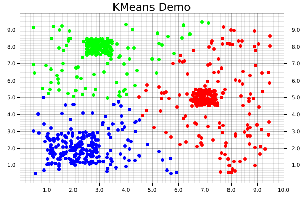

Getting Started With The K-Means Clustering Algorithm
What is KMeans?
KMeans is one of the most common clustering algorithms, where a set of unlabeled data points are grouped into a set of clusters such that each data point is part of the cluster with the centroid nearest to itself.
The centroid of a cluster is calculated as the mean, or average, of the points assigned to that cluster. The linfa crate provides an implementation of the standard algorithm for this process, known as "Lloyd's algorithm."
KMeans is_iterative_, meaning that it progressively refines the points assigned to each cluster, and therefore a new centroid for that cluster (leading to new points being assigned to it) during each successive iteration. At a high level, there are three main steps to the algorithm:
- Initialization: Choose our initial set of centroids--this can happen randomly or be set by the user, but the number of clusters/centroids is always defined ahead of time in KMeans
- Assignment: Assign each observation to the nearest cluster (minimum distance between the observation and the cluster's centroid);
- Update: Recompute the centroid of each cluster.
Steps 2 and 3 are repeated until the location of the centroid for each cluster converges.
Using KMeans with linfa-clustering
First, we'll start off by importing the dependencies, which can be found in the Cargo.toml file in the code/ folder. Note that we need to include both the overall linfa crate, which will provide some of the structuring, as well as the actual KMeans algorithm from the linfa-clustering crate.
#![allow(unused)] fn main() { // Import the linfa prelude and KMeans algorithm use linfa::prelude::*; use linfa_clustering::KMeans; use linfa_nn::distance::L2Dist; // We'll build our dataset on our own using ndarray and rand use ndarray::prelude::*; use rand::prelude::*; // Import the plotters crate to create the scatter plot use plotters::prelude::*; }
After importing the dependencies, we'll start off by creating a set of data points that we want to cluster. This data could be imported from somewhere else through a library like ndarray_csv or polars, but we'll create it manually here for this example. The most important thing is that we end up with an ndarray Array2<f32> data structure.
For this dataset, we'll get started with a few squares filled with random points, in which each square is defined by a center point, edge length, number of points contained within it's boundaries. Each of those squares should end up having a high-enough density to be the center point of one of our clusters. We'll also create a large, sparse set of points covering all over them to act as background noise, which will help to visually demonstrate how disparate points get assigned to clusters.
Since each of these squares is being created individually, we'll then need to consolidate them along (along the y-axis) by using the ndarray::stack() function, which concatenates arrays along the specified axis.
#![allow(unused)] fn main() { let square_1: Array2<f32> = create_square([7.0, 5.0], 1.0, 150); // Cluster 1 let square_2: Array2<f32> = create_square([2.0, 2.0], 2.0, 150); // Cluster 2 let square_3: Array2<f32> = create_square([3.0, 8.0], 1.0, 150); // Cluster 3 let square_4: Array2<f32> = create_square([5.0, 5.0], 9.0, 300); // A bunch of noise across them all let data: Array2<f32> = ndarray::concatenate( Axis(0), &[ square_1.view(), square_2.view(), square_3.view(), square_4.view(), ], ) .expect("An error occurred while stacking the dataset"); }
Now that we have our data, we'll convert it into the form that Linfa uses for training and predicting model, the Dataset type.
In order to actually build the KMeans algorithm, there are two additional things that we'll need: the number of clusters we're expecting, and a random number generator (RNG). While it is possible to manually define the starting location of each centroid, we often use KMeans in situations where we don't know much about the data ahead of time, so randomly creating them can work just as well. This represents one of the trade-offs of using KMeans; it will always converge towards a minima, it's just not guaranteed that is will be a global minima.
Using these variables, we can build our model, and set a few additional parameters that may be useful along the way. In this case, those parameters are the maximum number of iterations that we'll allow before stopping, and the tolerance in terms of distance between each iteration that we'll allow before considering our fit to have converged. Finally, we'll run the fit() method against the dataset.
#![allow(unused)] fn main() { let dataset = DatasetBase::from(data); let rng = thread_rng(); // Random number generator let n_clusters = 3; let model = KMeans::params_with(n_clusters, rng, L2Dist) .max_n_iterations(200) .tolerance(1e-5) .fit(&dataset) .expect("Error while fitting KMeans to the dataset"); }
In order to actually get the cluster assignments for the original dataset, however, we'll need to actually run the model against the dataset it was trained on. This may seem a little counter-intuitive, but this two-step process of fit() and predict() helps to make the overall modelling system more flexible.
Calling the predict() method will also convert the dataset variable from a single Array2<f32> in a pair of arrays (records, targets): (Array2<f32>, Array1<f32>).
#![allow(unused)] fn main() { let dataset = model.predict(dataset); println!("{:?}", dataset.records.shape()); println!("{:?}", dataset.targets.shape()); }
At this point, we have all of our points and their assigned clusters, and we can move onto doing some data visualization! The initial step in that process is setting up the backend, of which the plotters library has several. We'll use the BitMapBackend, which will save the chart we create into a .png image file with a specified name and size.
A ChartBuilder data structure will be laid on top of the backend, which will actually be responsible for the placing of chart elements like labels, margins, grids, etc. which are all defined by the user. In this case, we want to graph on a two-dimensional Cartesian plane, with both the x- and y-axes set to a range of [0..10].
#![allow(unused)] fn main() { let root = BitMapBackend::new("target/kmeans.png", (600, 400)).into_drawing_area(); root.fill(&WHITE).unwrap(); let x_lim = 0.0..10.0f32; let y_lim = 0.0..10.0f32; let mut ctx = ChartBuilder::on(&root) .set_label_area_size(LabelAreaPosition::Left, 40) // Put in some margins .set_label_area_size(LabelAreaPosition::Right, 40) .set_label_area_size(LabelAreaPosition::Bottom, 40) .caption("KMeans Demo", ("sans-serif", 25)) // Set a caption and font .build_cartesian_2d(x_lim, y_lim) .expect("Couldn't build our ChartBuilder"); }
The final part of this process consists of actually adding in the mesh, and setting up an area for plotting each of the individual data points.
#![allow(unused)] fn main() { ctx.configure_mesh().draw().unwrap(); let root_area = ctx.plotting_area(); }
Before starting to plot, however, we want to make sure that the data we're going to plot is the right shape; a two-dimensional dataset with two columns. Fortunately, a simple helper function has been written to double-check if that is true.
#![allow(unused)] fn main() { // check_array_for_plotting(dataset: &Array2<f32>) -> bool {} check_array_for_plotting(&dataset.records); // Panics if that's not true }
We're now ready to begin plotting! It is possible to plot elements as part of a series, but it's easy (and still quite fast) to do each individually. First, the coordinates from each element get pulled from the dataset.records array. Those coordinates are then used to create a dot, where we pattern-match on the point's assigned cluster from dataset.targets to choose the color.
Notice that the pattern-matching here is exhaustive! For KMeans, this isn't important, because each point is automatically assigned to a cluster. However, that's not necessarily true for all clustering algorithms, where some less-important data points can be left behind, so it's good practice to make sure that we consider that possibility. Finally, we'll actually draw the chart element we created using that information onto the chart area.
#![allow(unused)] fn main() { for i in 0..dataset.records.shape()[0] { let coordinates = dataset.records.slice(s![i, 0..2]); let point = match dataset.targets[i] { 0 => Circle::new( (coordinates[0], coordinates[1]), 3, ShapeStyle::from(&RED).filled(), ), 1 => Circle::new( (coordinates[0], coordinates[1]), 3, ShapeStyle::from(&GREEN).filled(), ), 2 => Circle::new( (coordinates[0], coordinates[1]), 3, ShapeStyle::from(&BLUE).filled(), ), // Making sure our pattern-matching is exhaustive _ => Circle::new( (coordinates[0], coordinates[1]), 3, ShapeStyle::from(&BLACK).filled(), ), }; root_area .draw(&point) .expect("An error occurred while drawing the point!"); } }
And that's it! Note that there's not separate step for saving the final product, since that's automatically taken care of by our backend. The final visualization of the clusters created by the KMeans algorithm will look like the following:
